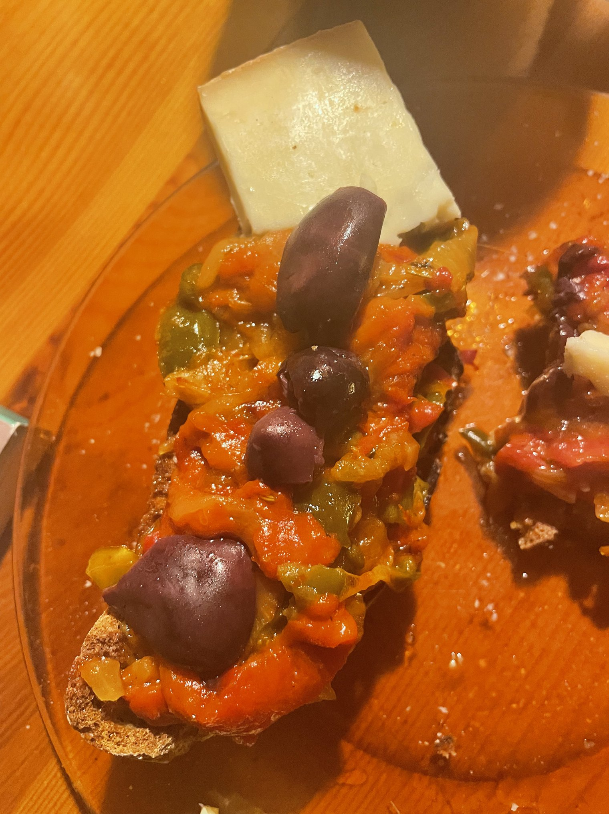

Tostada con pimientos, olivas negras y queso morbier
Ingredientes
1×
- 1 pimiento rojo
- 1 pimiento verde
- aceite de oliva
- sal
- 1 rebanada de pan
- unas olivas negras
- un poco de queso morbier

Preparación
Paso 1
Cortar 1 pimiento rojo y 1 pimiento verde en tiras y pocharlos a fuego lento con aceite de oliva y sal.
Paso 2
Tostar 1 rebanada de pan y poner por encima los pimientos y unas olivas negras.
Paso 3
Servir con un poco de queso morbier.